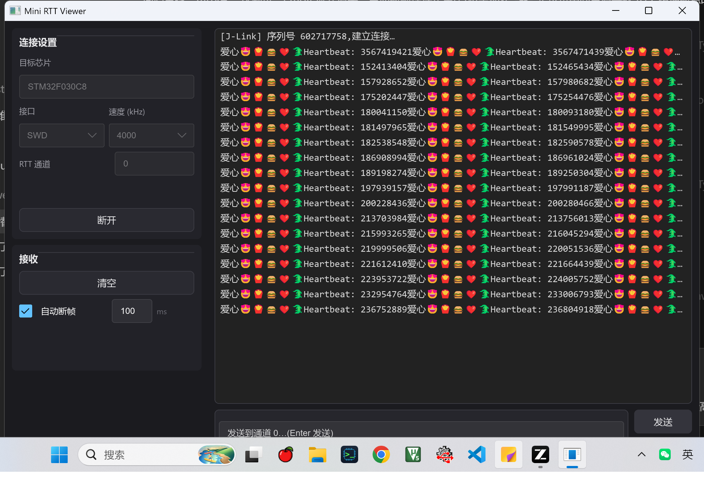
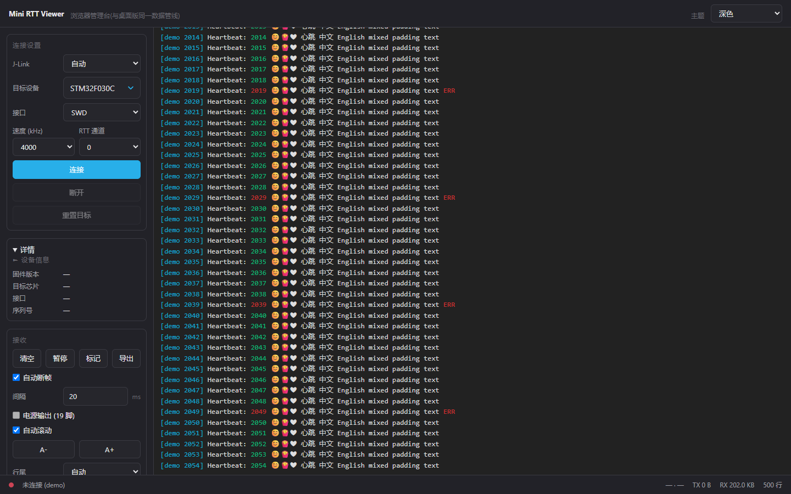

FFI 直连官方 J-Link DLL
直接调 SEGGER 官方 DLL,不经 pylink 之类封装;与官方驱动共存不抢 USB,多台调试器接入时下拉指定连哪一台,连接后固件版本、核心型号、序列号一目了然。
J-LINK RTT CONSOLE
RTT 比串口快得多,官方 J-Link RTT Viewer 对 UTF-8 的支持却是坏的:中文乱码、emoji 直接丢。Mini RTT Viewer 单文件约 3 MB、免安装,中文和 emoji 原样显示,10kHz+ 吞吐不卡 UI,启动不到 1 秒。
Windows 10/11 x64 无板演示 --demo-log MIT 开源
当前版本 v0.4.1 · 单 exe 双击即用,浏览器管理台已内嵌
FEATURES
直接调 SEGGER 官方 DLL,不经 pylink 之类封装;与官方驱动共存不抢 USB,多台调试器接入时下拉指定连哪一台,连接后固件版本、核心型号、序列号一目了然。
ANSI 16/256/RGB 真彩色全解析,颜色状态跨行跨块保持;窄窗口长行自动换行,不出现横向滚动条。
Ctrl+F 浮动搜索条:正则 / 字面量开关、命中行高亮、n/m 计数、↑↓ 逐处跳转;日志区有选中文本时再按 Ctrl+F,直接拿选区当关键词。
深色 / 浅色 / OLED 纯黑 / 护眼暖色,下拉即时切换,已上屏的日志行颜色跟着走;字号 A- / A+ 随手调,行高与滚动网格自动适应。
桌面版在本机起服务,浏览器打开 127.0.0.1:8686 就能进同一个管理台(托盘一键打开),与窗口同一套真机连接协议;Playwright 黑盒测试进 CI,不是摆设。
解压即用:没有 Python、无需安装运行时(WebView2 随 Windows 10/11 自带);主程序约 0.85 MB,启动不到 1 秒,拷给同事就能跑。
SCREENSHOTS


DOWNLOAD
2026-09-24 发布
Windows x86_64 · zip · 约 0.85 MB · 桌面版单程序(内嵌浏览器管理台)
mini-rtt-viewer-0.4.1-windows-x86_64.zip
包内单程序——mini-rtt-viewer.exe 桌面版(浏览器管理台已内嵌),解压即用。
下载 Windows 版SHA256
安装包未做代码签名:首次运行若被 Windows SmartScreen 拦下,点「更多信息」→「仍要运行」;介意的话,先核对上方 SHA256 再运行。
系统要求:Windows 10/11 x64;需已安装 SEGGER J-Link 软件包(程序运行时加载其中的 JLink_x64.dll,本工具不捆绑、不分发该 DLL);目标板固件需已初始化 SEGGER RTT。
下载后核对这串校验值与本地文件一致,即可确认安装包完整、未被篡改。
校验命令:Windows:certutil -hashfile <文件名> SHA256
纯本地工具:无遥测、无自动更新,新版本请留意 GitHub Releases
QUICK START
去 SEGGER 官网装好 J-Link 软件包,驱动自带本工具要加载的 JLink_x64.dll——没有它,连不上芯片。
解压 zip,双击 mini-rtt-viewer.exe 即用:桌面窗口直接操作,或点托盘「在浏览器打开」/访问 http://127.0.0.1:8686 进同一套管理台。
左侧面板填 J-Link 认的完整型号(如 STM32F103C8),选 SWD 和速率,点「连接」开始收日志。手边没板子?先用内置演示流过过瘾——滚动、断行、emoji 渲染全都能看。
CHANGELOG
修复关闭进程僵尸假死(退出必干净),日志排版对齐 VS Code(14px/行高×1.5/字距收紧),WS 消息等自造轮子换 serde/原生 popover 现成方案;新增 RX/TX 速率、会话时长、日志时间戳开关、复制与导出反馈,顺带修掉右键复制在 Chromium 下失效的老 bug。
管理台界面全面复刻 Slint 版观感:发送区/设备信息/接收组满一屏,textarea 四主题化,控件高度与对齐线统一;主题插件化(themes/*.css 拖入即用),发送历史与设置全量持久化。
桌面壳架构迁移:tao 窗口 + WebView 内嵌管理台 + 托盘,Slint 退役,单 exe 双击即用(约 0.85 MB)。
体验大版本:全部配置持久化到 %APPDATA%,VS Code 式正则搜索,按显示列换行(中文不越界),列级自由复制;外加 HEX 收发与五种字符集,测试从 22 条涨到 46 条。